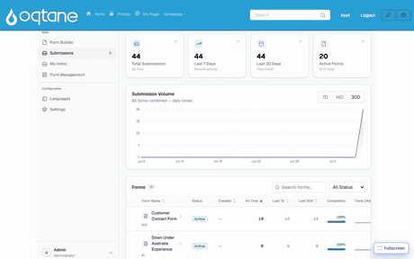
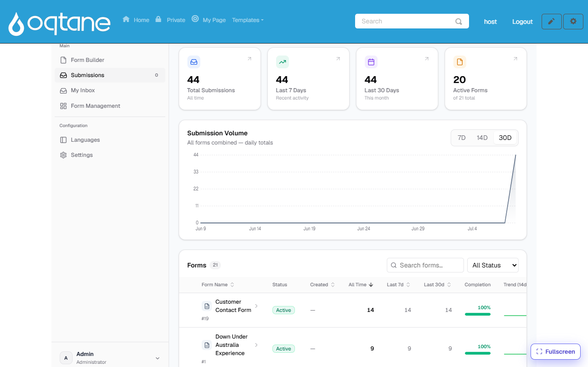
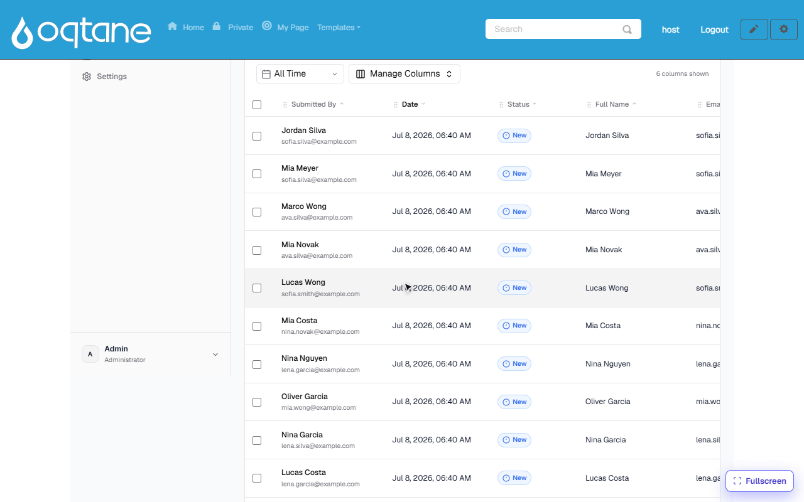
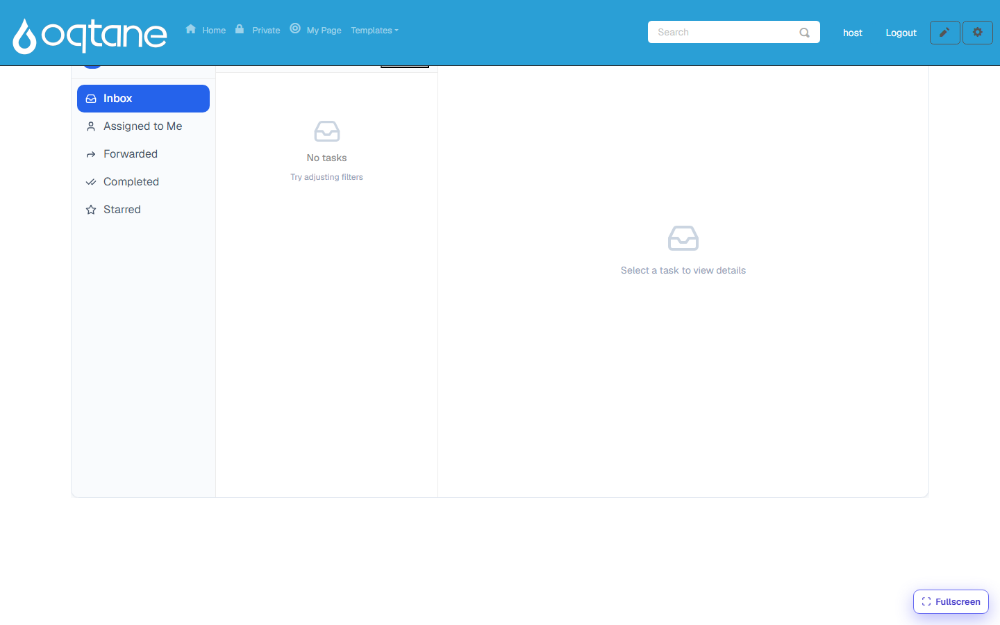

Submissions & My Inbox
Everything a form collects lands in the Form Dashboard, under Submissions — analytics first, then a full data grid per form. Approval-style work items appear in My Inbox.

The overview
Form Dashboard → Submissions opens with the big picture:

- Totals — all-time, last 7 days, last 30 days, and how many forms are active.
- Submission Volume — daily totals across all forms (7D / 14D / 30D).
- Forms list — every form with its counts, completion rate and a 14-day trend spark-line. Click a form to open its data.
The per-form data grid

Each row is one submission. From here you can:
- Search free-text across submissions, and filter by status and time range.
- Manage Columns — choose which form fields appear as grid columns (the choice is remembered per form).
- Track status per submission — New → Processed / Pending — so a team can work through incoming entries.
- Export the data, and bulk-select rows for batch actions.
- Open a row for the full detail view: every answer, uploaded files, and the submission's history.
My Inbox
My Inbox is the task view for approval workflows: when a workflow contains an approval step, each submission that reaches it creates a task for the assigned users or roles.

- Folders: Inbox, Assigned to Me, Forwarded, Completed, Starred.
- Open a task to see the submission it belongs to, then Approve, Reject (a comment can be required), or Forward it to someone else.
- Tasks can be claimed from a shared queue (candidate roles/users are defined on the approval step), and each action is recorded in the task's history.
How approval steps are added to a form's process — including who the candidate approvers are and what status the submission takes while waiting — is covered in Workflow.